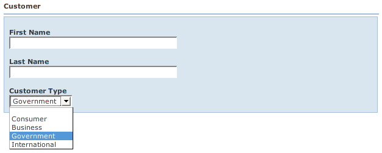

Back: NestedBeans Next: Tables
Sometimes a property represents a selection from a set of values. If the property returns a Java enum, WWB makes it really easy to present a drop-down list of choices. Let's look at wicket.contrib.webbeans.examples.enums.EnumBeanPage:
Embed:wicket.contrib.webbeans.examples.enums.EnumBeanPage
The wicket.contrib.webbeans.examples.enums.Customer bean references a Java enum type called wicket.contrib.webbeans.examples.enums.CustomerType:
Embed:wicket.contrib.webbeans.examples.enums.CustomerType
And here are the beanprops:
# Enum Bean Example
Customer {
cols: 1;
props:
firstName, lastName,
customerType{default: Government};
}
The result looks like:

We specify the parameter "default" for customerType so that the the drop-down defaults to "Government". If we hadn't specified the default, the drop-down would have defaulted to null (an empty selection).
Later you'll see how to implement custom/dynamic runtime enums where the values can be derived from a database or other source.
Back: NestedBeans Next: Tables